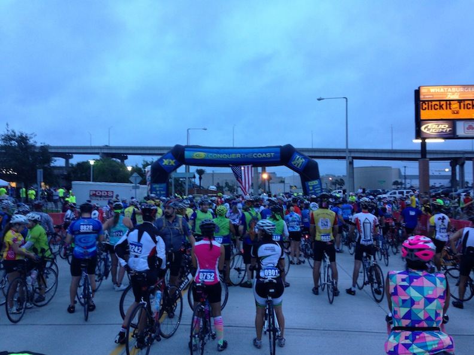
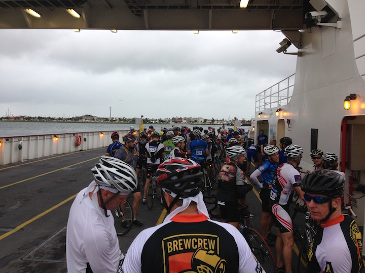
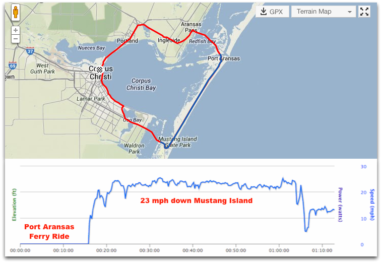
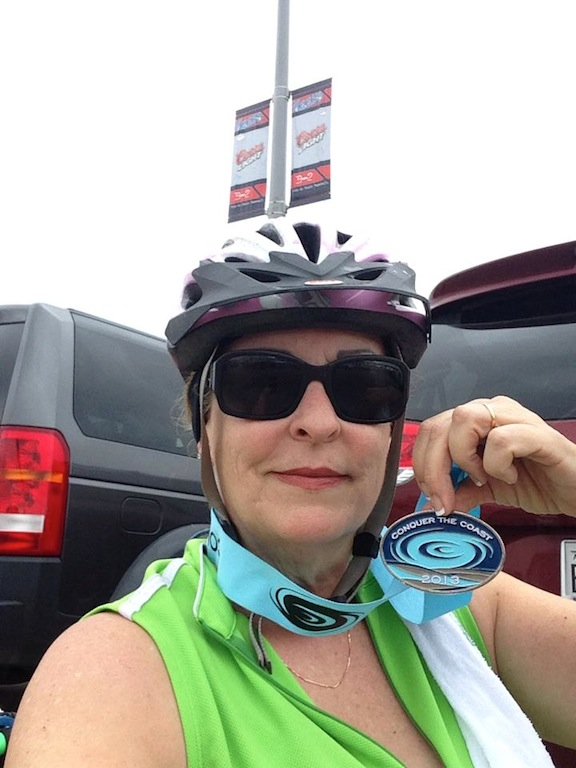
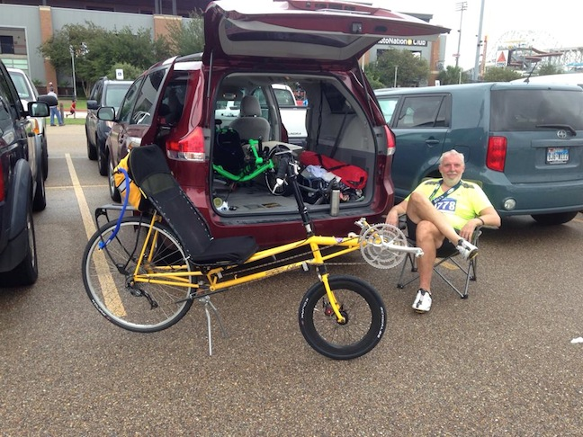
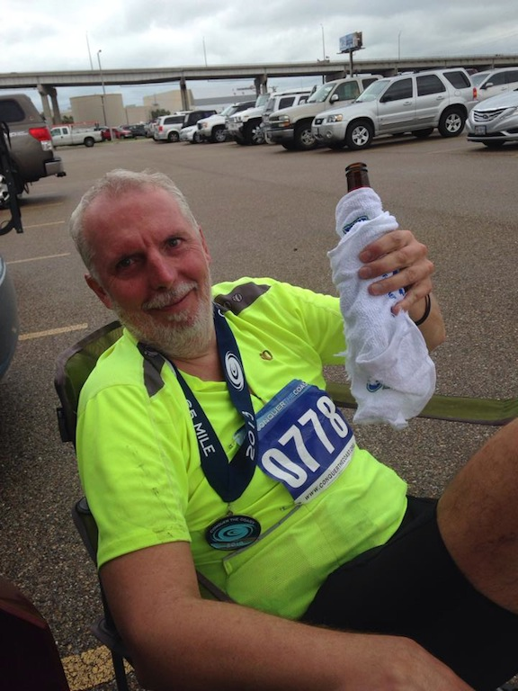
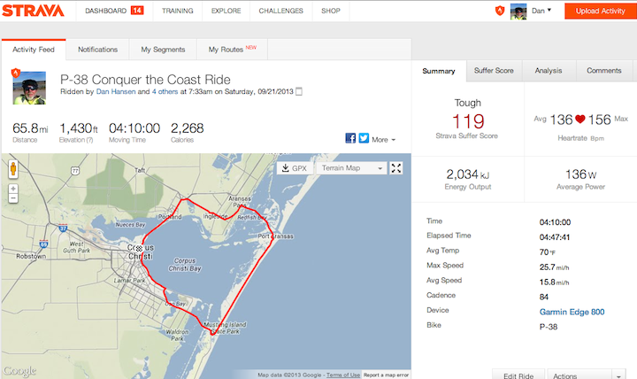
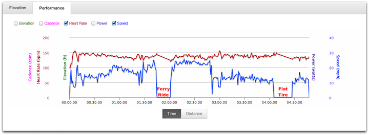
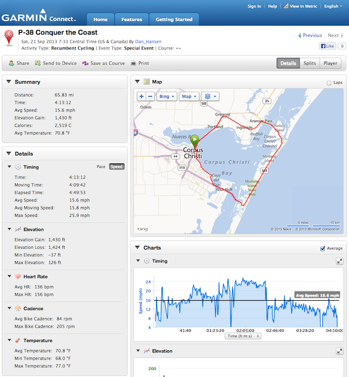
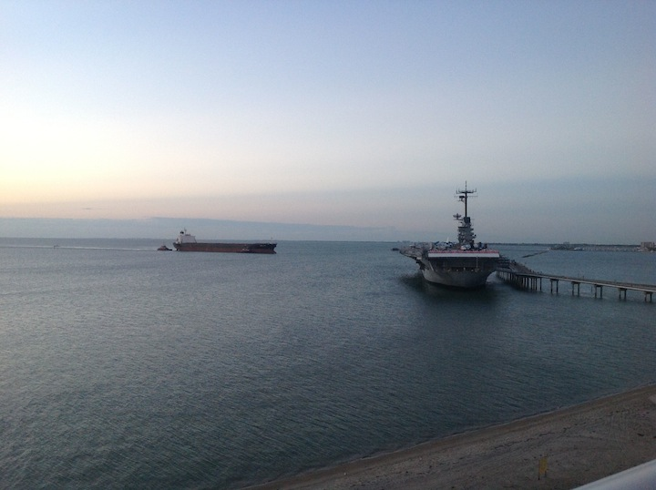

P-38 Conquer the Coast - Ride Report
21 Sep 2013

Late in the week the weather was expected to be heavy rain for the Saturday morning ride. But, come ride day the rain was mostly gone for the start of the ride. Robyn and I got the ride early. She was doing the 25 mile route on her new lime green Expedition Catrike. I opted for the 65 mile around the bay route. About 1,500 people lined up for the start and I spent some time before the start riding around the parking lot talking with other riders.
I met up with TWO other P-38 riders in the parking lot - both local to the Houston area and used their P-38s to commute daily.
The first 12 miles were a tough pound into a headwind of 20 mph gusting to 30 mph. As time went on the winds increased to 25 mph gusting to 35 mph. The decision late in the week to remove the fairing from the F-40 and ride the P-38 was the correct one.
The ride started out and almost immediately it was climb over the Harbor bridge directly into the 20 mph headwind. The start was organized into three waves for the 65 mile ride. The first wave was for riders expected to do 20+ mph, the second wave for riders expected to do 15-20 mph and then the rest of the riders in the last wave. I started at the front of the second wave (15-20 mph) and I could see that a lot of the riders in the first group did not really belong there (based upon my own prior health history I know that there are certain physiques that do not lend themselves to 20 mph average for 65 miles).
The Harbor bridge was an 8 percent grade for a half mile. I probably passed 30 percent of the first wave going up the bridge and then the next 12 miles were into the 20 mph headwind. The P-38 allowed me to better penetrate the headwind and again I passed many uprights in the first 12 miles. Of course it helped that the two other P-38s eventually caught me around mile marker 4 and we formed a rotating pace-line into the wind for about 8 miles. I really need to work on my pace-line abilities because I kept getting dropped off the back and had to work extra hard to re-acquire. It was really cool riding with two other P-38s. When passing uprights they would yell when the second P-38 passed them and then scream ‘THREE OF THEM’ when the third passed.
Finally after 28 miles we reached the Port Aransas ferry. They held the ferry for 15 minutes while it loaded up with bicycles and I think all the recumbents were on the same crossing as myself: three P-38s, a Carbon Aero 2.0 and an original small-wheeled Carbent. I wish I’d have taken pictures of the other recumbents.

Once off the ferry, and headed south down Mustang Island, the wind became a quartering tailwind and the ride was a blast! For an hour, with the help of the tail wind, I averaged around 23 mph. Life was pretty darn good.
The Good Life - Speeding down Mustang Island @ 23 mph

The good life ended at mile marker 48 where I came to the bridge at the southern end of Mustang Island. Again another 8 percent grade for 1/3 mile with a quarting headwind that had increased by now to 25 mph gusting to 35. The deep-v rim on the front of my bike was getting yanked all over the place and I had to maintain a death grip on the handle bars. At the top of the bridge it started raining - pelting and stinging like mad. I rode the brakes all the way down the other side of the bridge to keep under 10 mph just so that I could keep control of the bike. The rest of the ride over the 3 mile causeway was brutal. The hard rain, the 35 mph gusting wind picking up every little piece of sand and flinging it against me, the front wheel wanting to go every which way. I was pretty darn glad to make it back to land where there were some buildings to shield the wind every now and then.
Now it was another 14 miles into the headwind north back up the coast to Corpus Christi. The ride along Ocean Dr was beautiful (even if very windy).
Riding the last 12 miles along Ocean Dr with the headwind of 25 mph gusting to 35 mph I started to become concerned about Robyn because I knew that she also had to conquer this section of the ride on her Expedition Catrike. It was a real struggle for me on this section because I was already exhasted from the first 53 miles.
Three miles from the finish I get a flat front tire. Bummer. I was already so exhasted that it took me 20 minutes to change the tire. I’ve had two flats now in the last two weeks since I’ve changed the tires from Marathon Pluses to Kojaks. I think I’m going to try some Stan’s NoTubes sealant to see if I can stop the flats.
Riding through the finish gate I was very releaved to see Robyn having successfully completed the dificult 25 mile ride in the fierce wind.

I noticed there is a difference between men and women in finish photographs. I have dirt and sand all over me. My bike jersey is all grease from changing the tire. I’m sitting in a chair because I can hardly move. Robyn on the other hand looks like she’s ready to go out for a night on the town. Hmmm, me thinks she may have primped before taking her photo?
Post ride celebration / recovery. That was one tough ride. I wanted an experience. I got it.


65.8 miles, four hours and ten minutes ride time. Only two breaks: 20 minutes on the ferry and 23 minutes changing the tire.



Of course by the next morning the weather had cleared - no wind, no clouds - just a beautiful morning sitting on the balcony having some coffee looking out over the bay.
